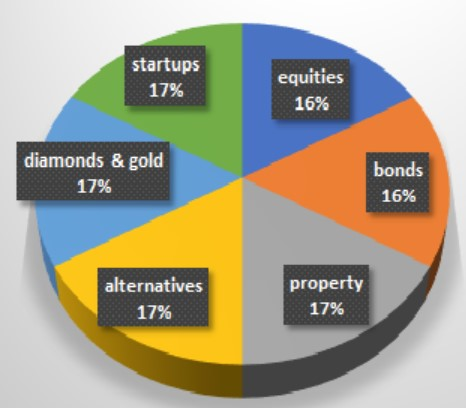

Visit the Louvre Museum
Visit the Louvre Museum
Visit the Lost City of Petra
 See the Northern Lights
See the Northern Lights
Become a Father

Develop a Diverse Portfolio
Michael Hoitenga is a self-taught artist that specializes in graffiti and street art. A Chicago native born in 1975, he grew up on the streets and developed a passion for drawing from an early age. He credits the gang graffiti in the neighborhood and the 1984 movie Beat Street with inspiring him. In the late 1980s, a friend gave him the nickname, Flask, which he has used as a pseudonym ever since. Today, Michael enjoys painting everything from huge outdoor murals to small canvases and other inventive forms of art. He has a strong focus on drawing, painting, and mixed-media installations which are visually stimulating and brightly colored multi-layered compositions. His drawings and paintings are enhanced by urban culture. Michael is a highly respected and admired individual who counts his followers among graffiti artists, tattoo artists, skaters, designers, and the more traditional gallery audiences.
The importance of being able to provide light and support to the people who matter the most to Michael is something that he takes pride in. His life has been filled with many challenges, and he has overcome them with grace and determination. Regardless of what hand is dealt to him, he strives to make the best of it and looks for the beauty in everything. One of his favorite quotes is from Confucius: "Everything has beauty, but not everyone sees it.". Michael’s goals include visiting the Louvre museum in Paris, visiting the Lost City of Petra, seeing the Northern Lights in Iceland, becoming a father, and developing a diverse investment portfolio.
Visit the Louvre Museum
See the Northern Lights